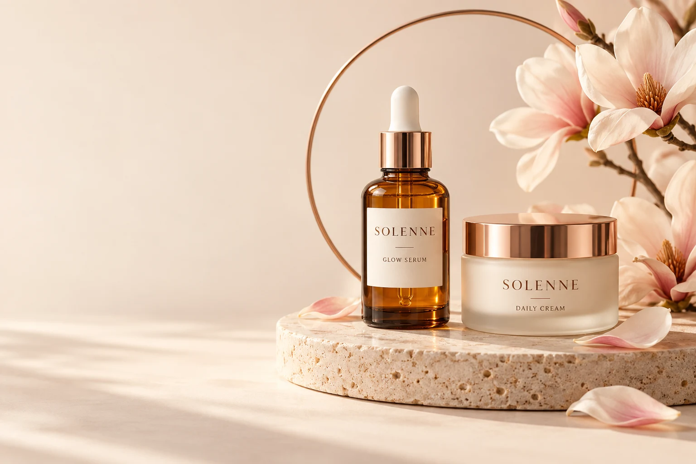
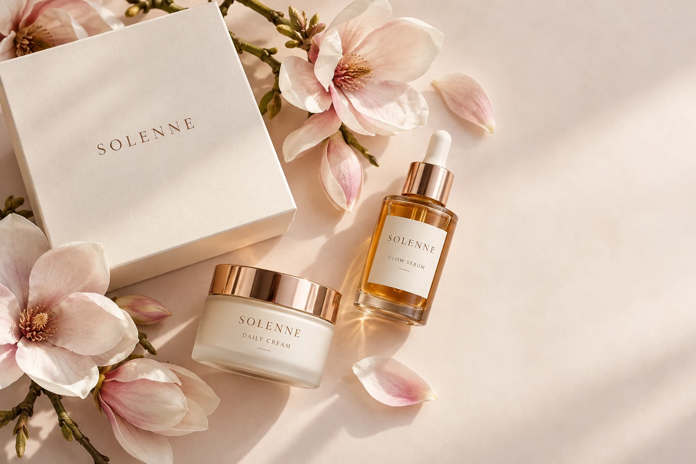

A fresh start
Make room for a little everyday radiance.
A little care. A little radiance.
Considered skincare. Gentle daily rituals. A little space to feel beautifully like yourself.

Make room for a little everyday radiance.
Soft textures. An unhurried moment.
A simple ritual you can make your own.
Start with what feels right for your skin.
Beauty is personal. We believe in small, thoughtful moments of care — and skin that still looks like you.
Find your ritualTwo simple steps. One lovely moment to yourself.

A light, silky addition to your morning or evening ritual.
Enquire about skincareA comforting final layer. Take your time, make it yours.
Enquire about skincareThoughtfully chosenEvery detail has a purpose
Beautifully simpleLess noise, more care
Always personalYour skin, your own rhythm
Here to helpA conversation comes first
Start gently. Give yourself a few quiet minutes, and choose a ritual that fits your day.
Pause, cleanse, unwind. Everyday care can be a small invitation to slow down.
Your needs can change. Keep your routine comfortable and ask for guidance when you need it.
A conversation, just for you
Tell us what you are looking for. We would love to help you find your everyday ritual.
Find your ritual Opens your email app.